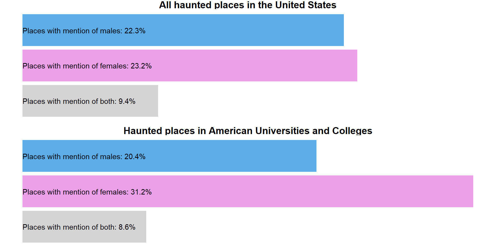
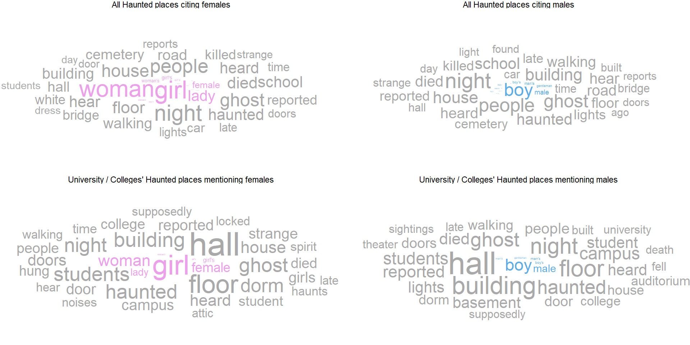
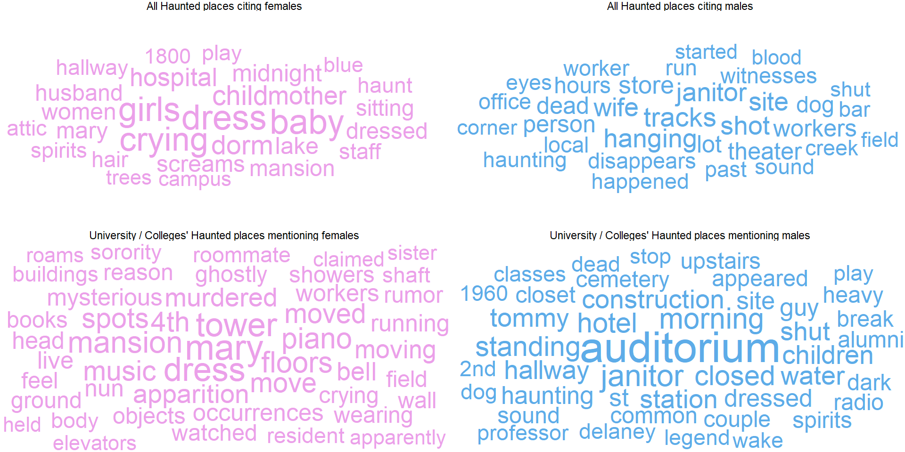

Ghostly Jargon in Haunted Spots: A Gendered Perspective
Looking at the dataset for haunted places in USA as a part of Tidy Tuesday (Oct 10, 2023)
In the eerie realm of American haunts, male spirits outnumber female in most locales. Yet, within the sinister confines of academia, the scales tip towards women. A spine-chilling revelation!
Ghostly Jargon in Haunted Spots: A Gendered Perspective
Figure 2 illustrates the prevalence of gender-specific common words in haunted locations, comparing all American locations to haunted spots in universities and colleges.

Credits: Sentiment Analysis (Mohammad and Turney 2012) and code inspiration from Steven Ponce’s R script on GitHub.
Unique Verbiage in these haunted places
In contrast to the previous slide’s word clouds featuring overlapping terms, the Figure 3 shows distinct vocabulary found exclusively in male and female haunted locations.

Carefully look at All Haunted Places citing males: Who knew America’s haunted places had such a penchant for “wife” – even beyond the grave! Ghostly husbands, you’ve got some explaining to do! 😄👻
References
Mohammad, Saif M., and Peter D. Turney. 2012. “CROWDSOURCING A WORDEMOTION ASSOCIATION LEXICON.” Computational Intelligence 29 (3): 436–65. https://doi.org/10.1111/j.1467-8640.2012.00460.x.